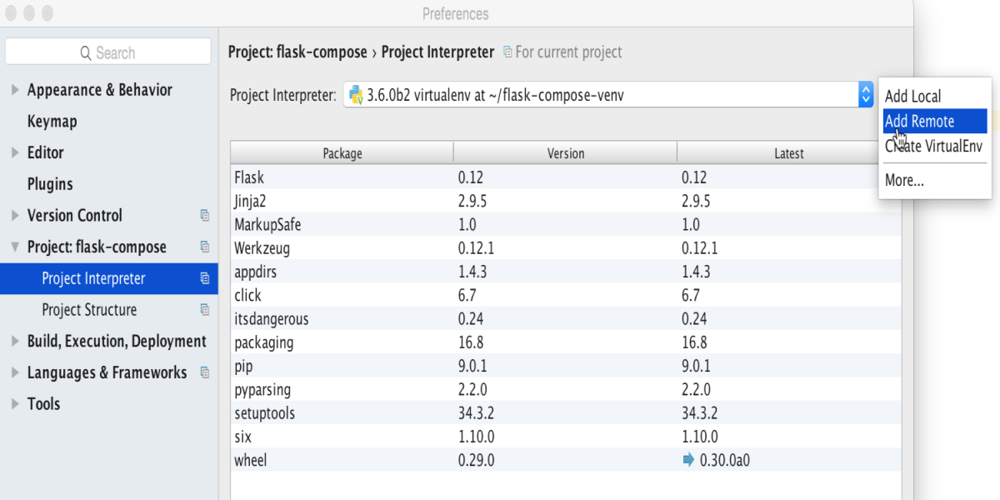
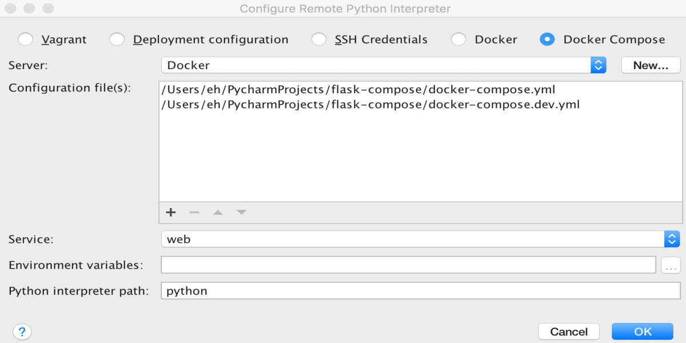
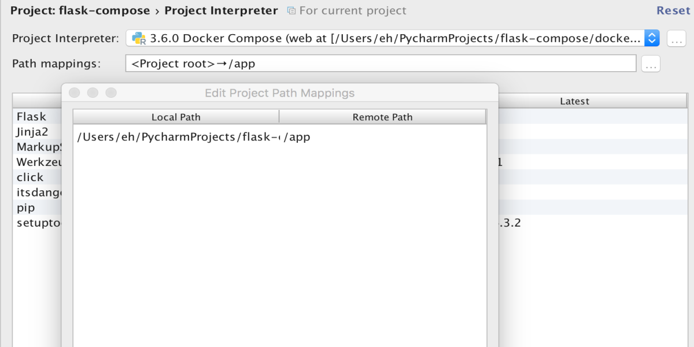
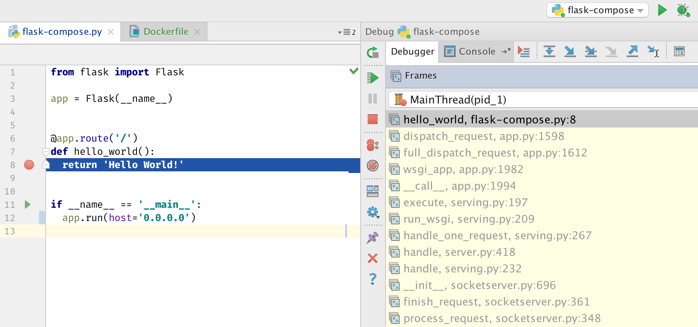
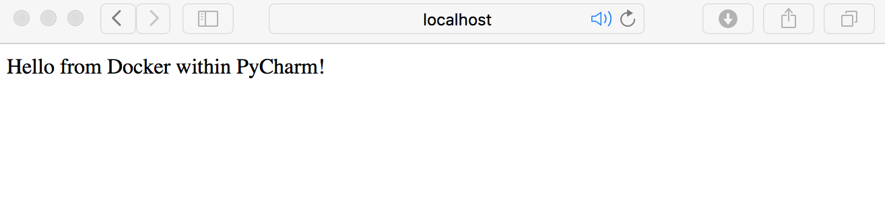

Docker Connection
Using Docker in PyCharm
So make our project run using a PyCharm run configuration, we need to set the project interpreter to the Docker Compose service.
We can do this from the Project interpreter page in preferences: Preferences | Project: Project Name | Project Interpreter.
Click the little button next to the interpreter dropdown (the white one, not the blue one), and choose “Add Remote”. If you
don’t see “Add Remote” here, you may be using PyCharm Community Edition, which doesn’t support remote interpreters.

Now choose “docker-compose”, and almost everything will be pre-configured, I only had to add the `docker-compose.dev.yml`
configuration to the list. We need to add it manually as this isn’t part of a standard docker project. You can do this with the ‘+’ button underneath the list of configuration files.

Now, we should set up the path mapping. We are inserting all our project code into the container’s “/app” directory.
So let’s add this on the Project Interpreter screen, use the ‘…’ button next to the Path mappings field to change them.

After you close the preferences window, you can just use the regular Run and Debug buttons to start and debug your project:

To celebrate, let’s change “Hello World!” to “Hello from Docker within PyCharm!”
